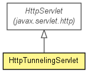

org.jboss.netty.channel.socket.http
Class HttpTunnelingServlet
java.lang.Object
 javax.servlet.GenericServlet
javax.servlet.http.HttpServlet
org.jboss.netty.channel.socket.http.HttpTunnelingServlet
javax.servlet.GenericServlet
javax.servlet.http.HttpServlet
org.jboss.netty.channel.socket.http.HttpTunnelingServlet
- All Implemented Interfaces:
- Serializable, javax.servlet.Servlet, javax.servlet.ServletConfig
public class HttpTunnelingServlet
- extends javax.servlet.http.HttpServlet

An HttpServlet that proxies an incoming data to the actual server
and vice versa. Please refer to the
package summary for
the detailed usage.
- Version:
- $Rev: 2119 $, $Date: 2010-02-01 20:46:09 +0900 (Mon, 01 Feb 2010) $
- Author:
- The Netty Project, Andy Taylor (andy.taylor@jboss.org), Trustin Lee
- See Also:
- Serialized Form
| Methods inherited from class javax.servlet.http.HttpServlet |
doDelete, doGet, doHead, doOptions, doPost, doPut, doTrace, getLastModified, service |
| Methods inherited from class javax.servlet.GenericServlet |
getInitParameter, getInitParameterNames, getServletConfig, getServletContext, getServletInfo, getServletName, init, log, log |
| Methods inherited from class java.lang.Object |
clone, equals, finalize, getClass, hashCode, notify, notifyAll, toString, wait, wait, wait |
HttpTunnelingServlet
public HttpTunnelingServlet()
init
public void init()
throws javax.servlet.ServletException
- Overrides:
init in class javax.servlet.GenericServlet
- Throws:
javax.servlet.ServletException
parseEndpoint
protected SocketAddress parseEndpoint(String endpoint)
throws Exception
- Throws:
Exception
createChannelFactory
protected ChannelFactory createChannelFactory(SocketAddress remoteAddress)
throws Exception
- Throws:
Exception
destroy
public void destroy()
- Specified by:
destroy in interface javax.servlet.Servlet- Overrides:
destroy in class javax.servlet.GenericServlet
destroyChannelFactory
protected void destroyChannelFactory(ChannelFactory factory)
throws Exception
- Throws:
Exception
service
protected void service(javax.servlet.http.HttpServletRequest req,
javax.servlet.http.HttpServletResponse res)
throws javax.servlet.ServletException,
IOException
- Overrides:
service in class javax.servlet.http.HttpServlet
- Throws:
javax.servlet.ServletException
IOException
Copyright © 2008-2011 JBoss, a division of Red Hat, Inc.. All Rights Reserved.